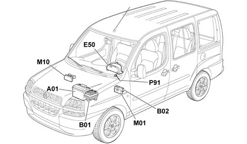
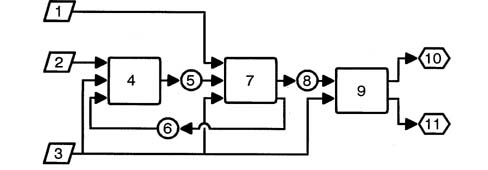
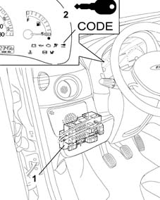
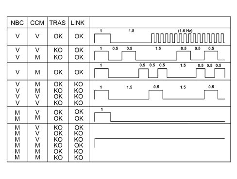

5580E ANTI-THEFT DEVICE
- Path
- Descriptions > 55 ELECTRICAL EQUIPMENT > 5580 SPECIAL ACCESSORIES > 5580E ANTI-THEFT DEVICE
- Kind
- system description
- Applies to
- all engines; all production periods
- Interactive page
- https://sloeber94.github.io/elrnDB-fDbl/en/#/2582348
Applies to: all engines; all production periods
LIST OF COMPONENTS
The location of the components is illustrated in the diagram below.

A1. Battery
B1. Junction unit
B2. General supply MAXI FUSE
E50. Instrument panel
M1. Body Computer
M10. Engine management control unit
P91. Aerial for FIAT-CODE
Dialogue between NBC CODE section, key and engine managment control unit.
The dialogue takes place as follows:
- With the ignition key in the ON position, the engine management control unit asks the CODE section of the NBC for the MINIKRYPT code.
- The Code section asks the transponder in the key for the ID code.
- The transponder transmits its ID to the CODE section of the NBC which compares it with the enabled ones in its memory.
- If the ID received is amongst the enabled ones, the secret code is checked through a coded dialogue between the CODE section and the transponder
- If this recognition takes place, the CODE control unit sends the MINIKRYPT code via the CAN network to the CCM which checks that it conforms and enables the starting of the engine. The Code warning light goes also goes out at that moment.
- If the recognition does not, on the other hand, take place, the CODE section does not allow the engine to be started up. The Code warning light also remains on.
FIAT CODE FUNCTION (MINIKRYPT)
Diagram showing Fiat Code system information.

1 Serial connection from code aerial
2 Accelerator pedal control
3 Ignition key control
4 Engine management control unit
5. Code request at CAN network
6. Code response at CAN network
7. Body computer connector
8 Code warning light status
9 Instrument panel connector
10 Code light at NQS
11. CCM fault diagnosis warning light
FIAT CODE FUNCTION (MINIKRYPT)
The Code and engine management control units 'converse' by means of the CAN network.
SYSTEM SELF-TESTING
The CODE section of the NBC has a direct diagnostic CAN line, dependent on the engine management control unit line.
The control unit carries out a continuous autodiagnosis of the system operation. In particular:
- it detects and memorizes any faults
- it recognizes the various components and the type of fault;
- it signals the onset of these faults via the special warning light in the instrument panel:
The control unit then recognizes faults in all the system components:
- NBC;
- aerial;
- key transponder;
- CAN network
Once the faults have been repaired, it is then possible to cancel the faults memorized by the control unit.
DATA BASE
There is a centralized DATA BASE (for all markets) managed by the PARTS DEPT. for ordering all system components.
The production plant transfers all the details needed into this DATA BASE together with the chassis number of the new vehicle.
This PARTS DATA BASE should be used by the Service Network for ordering replacement components.
The DATA BASE contains various information, including:
- vehicle chassis number;
- key ID codes (for a maximum of 8 keys)
- secret key codes (for a maximum of 8 keys)
- mechanical key code;
COMPONENT DESCRIPTIONS
The diagram below illustrates the position of the components described below:

1 Body computer connector
2 CODE system warning light
Operation
The main function of the CODE section of the NBC is to recognize the key inserted in the ignition switch.
The CODE section is also responsible for programming the keys and for the Code warning light.
Location
The electronic section of the FIAT CODE is incorporated in the body computer control unit located at the front, uner the dashboard cover, driver's side.
OPERATION
The FIAT CODE immobilizer warning light comes on for four seconds when the ignition is switched on and its operation is determined by the receipat of the message from the NBC in accordance with the code described in the table.
On briefly (1 second) and then off; key recognized, correct system operation. The warning light remains off if the NQS is disconnected from the CAN line.
The operation of the warning light is summarized in the following diagram.
The NBC column indicates whether the Body Computer needs to be initialized (virgin V) or whether it is already programmed (M).
The column CCM indicates whether the Body Computer has to be initialized (virgin V) or whether it is already programmed (M)
The column TRAS indicates the state of the transponder with OK - everything alright and KO not working
The LINK column indicates the state of the dialogue between the NBC and the CCM with OK standing for everything alright and KO meaning not working
Warning light blink code table
